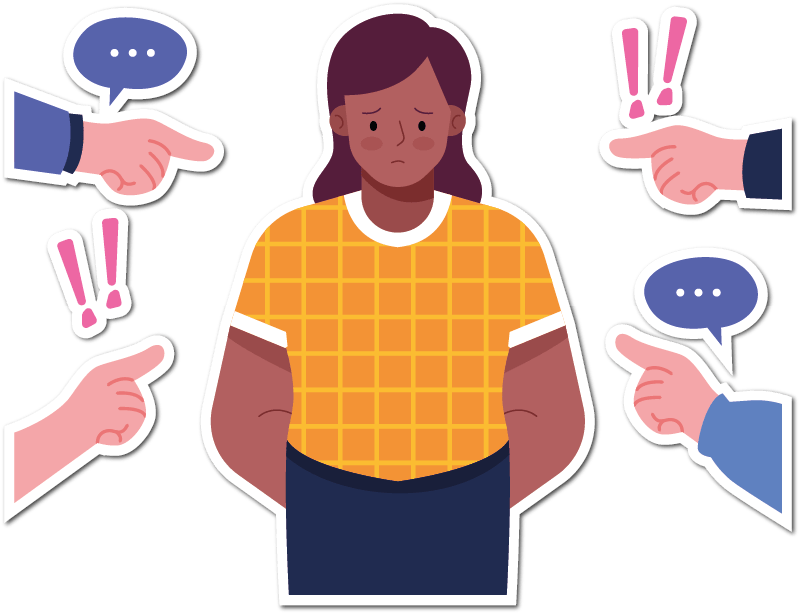
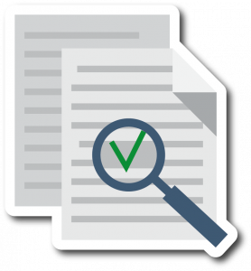
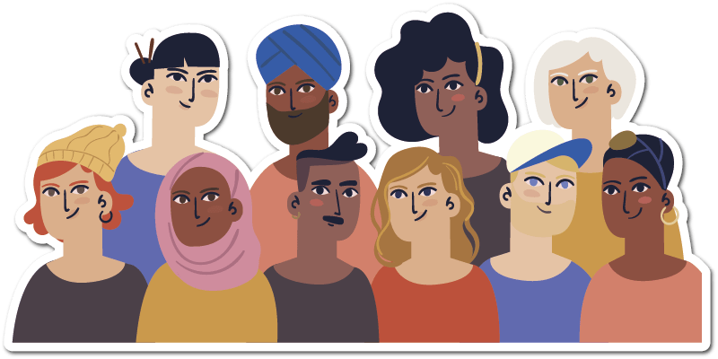
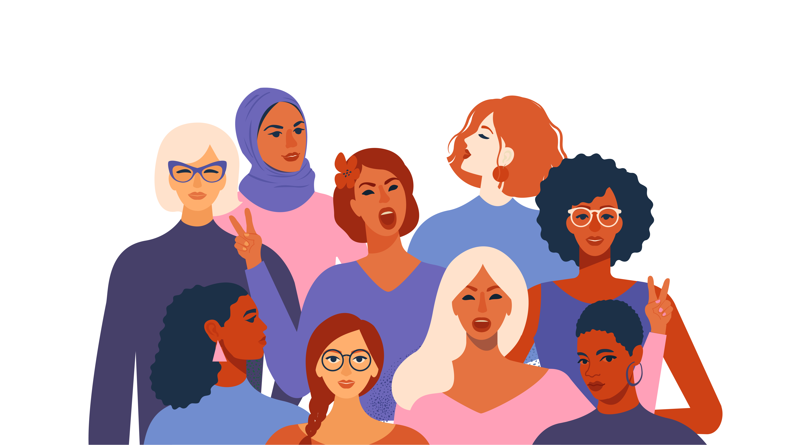

Objetivo de Desenvolvimento Sustentável
Igualdade de gênero
Alcançar a igualdade de gênero e empoderar todas as mulheres e meninas
1.
Acabar com todas as formas de discriminação contra todas as mulheres e meninas em toda parte
2.
Eliminar todas as formas de violência contra todas as mulheres e meninas nas esferas públicas e privadas,
incluindo o tráfico e exploração sexual e de outros tipos

3.
Eliminar todas as práticas nocivas, como os casamentos prematuros, forçados e de crianças e mutilações
genitais femininas
4.
Reconhecer e valorizar o trabalho de assistência e doméstico não remunerado, por meio da disponibilização de
serviços públicos, infraestrutura e políticas de proteção social, bem como a promoção da responsabilidade
compartilhada dentro do lar e da família, conforme os contextos nacionais
5.
Garantir a participação plena e efetiva das mulheres e a igualdade de oportunidades para a liderança em todos
os níveis de tomada de decisão na vida política, econômica e pública

6.
Assegurar o acesso universal à saúde sexual e reprodutiva e os direitos reprodutivos, como acordado em
conformidade com o Programa de Ação da Conferência Internacional sobre População e Desenvolvimento e com a
Plataforma de Ação de Pequim e os documentos resultantes de suas conferências de revisão
A.
Realizar reformas para dar às mulheres direitos iguais aos recursos econômicos, bem como o acesso a
propriedade e controle sobre a terra e outras formas de propriedade, serviços financeiros, herança e os
recursos naturais, de acordo com as leis nacionais
B.
Aumentar o uso de tecnologias de base, em particular as tecnologias de informação e comunicação, para
promover o empoderamento das mulheres

C.
Adotar e fortalecer políticas sólidas e legislação aplicável para a promoção da igualdade de gênero e o
empoderamento de todas as mulheres e meninas em todos os níveis
Rafael Davi Branco

A Convenção para a Eliminação de Todas as Formas de Discriminação contra a Mulher (Cedaw, 1979) e a Convenção Interamericana para Prevenir, Punir e Erradicar a Violência contra a Mulher (Convenção de Belém do Pará, 1994) estabelecem o compromisso dos Estados em garantir às mulheres uma vida sem violência.

A prevenção da violência de gênero é necessária para que ela não ocorra em primeiro lugar. Mas quando ela ocorre, os serviços essenciais devem atender às necessidades das mulheres e meninas, e a justiça deve ser implacável na defesa de seus direitos.